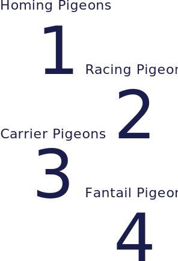

Famous Pigeon Lovers

Mike Tyson

Elvis Presley

Maurizio Gucci

Marlon Brando

Queen Elizabeth II

Pablo Picasso
Although the pigeon is one of the most intelligent of all the bird species, man has found limited uses for the birds other than for the purposes of sport, food and as a message carrier. A team of navy researchers, however, has found that pigeons can be trained to save human lives at sea with high success rates.
There are over 300 breeds of pigeons across the globe, four of the most popular are:
Feral pigeons are the same species as pigeons bred to race, and some racers have sold for more than $300,000 a bird.
Have you ever seen a baby pigeon? I didn’t think so. Interestingly, pigeons don’t reveal themselves to humans until they are fully mature.
Mother and father pigeons are equal partners in providing for their chicks.
Pigeons are monogamous, and can live to the age of 20.
Pigeons have an unparalleled ability to find their way home, no matter what scientists do to confuse them.
Pigeons are considered to be one of the most intelligent birds on the planet and able to undertake tasks previously thought to be the sole preserve of humans and primates. The pigeon has also been found to pass the ‘mirror test’ and is one of only 6 species, and the only non-mammal, that has this ability. The pigeon can also recognize all 26 letters of the English language as well as being able to conceptualize. In scientific tests pigeons have been found to be able to differentiate between photographs and even differentiate between two different human beings in a photograph when rewarded with food for doing so.
Mike Tyson
Elvis Presley
Maurizio Gucci
Marlon Brando
Queen Elizabeth II
Pablo Picasso